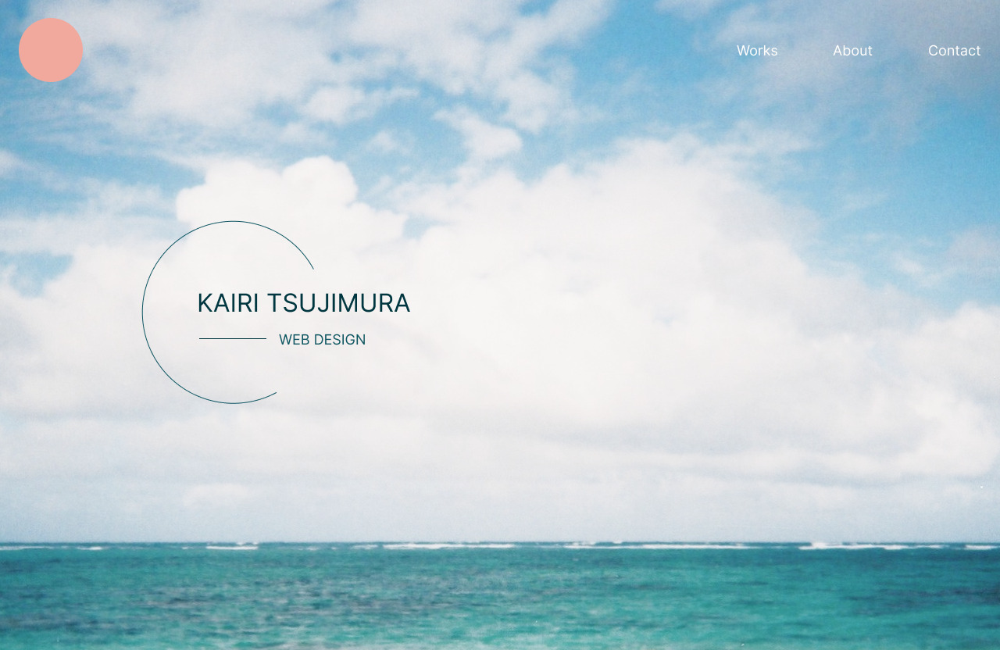

辻村海吏ポートフォリオ
https://kairi-0823.github.io/new-portfolio/WEBサイト
自主制作
Design / Figma
Cording / HTML / CSS / jquery
- 目的
- Webサイトを通じて私ができることをお伝えしたい。
- 情報設計
- まず私が製作してきたものを一覧にし、一目でジャンルが分かるように設計しています。それぞれの詳細ページも作成し、より詳しく制作物を拝見していただけるような動線にしています。次に写真付きの自己紹介を設置することで、「顔がわからない不安」を払拭しています。自己紹介にも詳細ページを設け、私のことをより知っていただける動線にしています。
- デザインプロセス
- このサイトで一番見ていただきたいのが作品一覧です。なるべくクリック数が少なくなるよう、一目見ただけでなんのジャンルなのか分かるように設計しました。なるべく余白を大きく取り、見やすさを意識。配色は「信頼」をイメージした青系をベースに、補色のオレンジをアクセントカラーに使用しています。単調なデザインと最低限の動きをつけることで飽きがこない、さらに見やすいデザインを心がけました。
- 制作期間
- デザイン 3週間
コーディング 1ヶ月
Contact
下記のメールアドレスにお気軽にお問い合わせください
kairi0823mangyoji@gmail.com